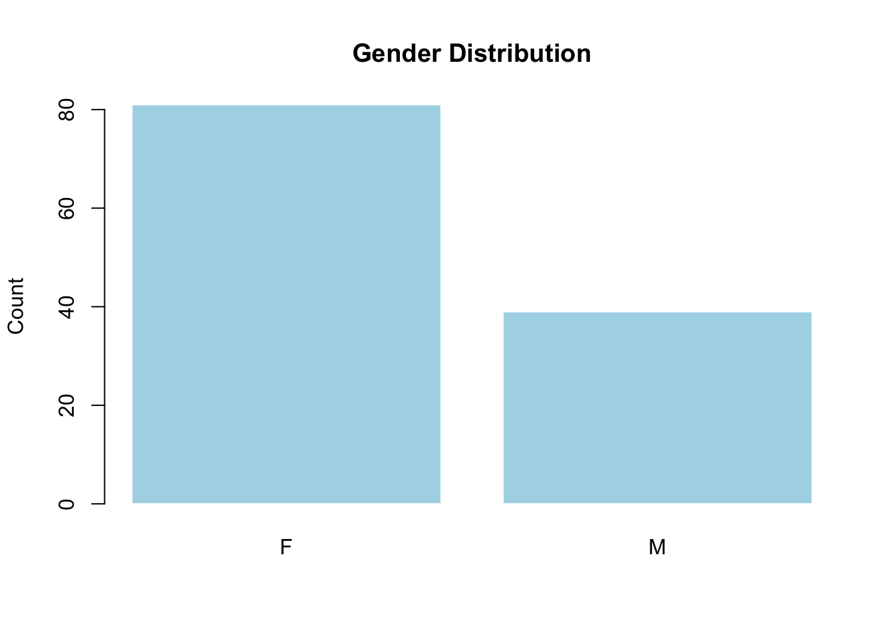

library(readr)
library(dplyr)
Attaching package: 'dplyr'The following objects are masked from 'package:stats':
filter, lagThe following objects are masked from 'package:base':
intersect, setdiff, setequal, unionlibrary(readr)
library(dplyr)
Attaching package: 'dplyr'The following objects are masked from 'package:stats':
filter, lagThe following objects are masked from 'package:base':
intersect, setdiff, setequal, uniondata <- read_csv("../data/student_registrations_clean.csv", show_col_types = FALSE)
glimpse(data)Rows: 120
Columns: 8
$ student_id <dbl> 1001, 1002, 1003, 1004, 1005, 1006, 1007, 1008, 1009, …
$ course <chr> "AI Fundamentals", "Statistics", "Data Science", "AI F…
$ grade <dbl> 81.0, 90.6, 100.0, 100.0, 99.2, 80.1, 94.5, 98.8, 95.3…
$ study_hours <dbl> 5.6, 7.8, 8.6, 13.2, 11.0, 4.7, 11.0, 8.8, 8.0, 11.8, …
$ gender <chr> "F", "F", "F", "M", "F", "F", "M", "F", "F", "F", "F",…
$ enrol_date <date> 2024-09-14, 2024-09-16, 2024-09-14, 2024-09-12, 2024-…
$ attendance_rate <dbl> 0.71, 0.76, 0.96, 0.94, 0.84, 0.82, 0.85, 1.00, 0.88, …
$ major <chr> "Econ", "CS", "Math", "Econ", "Econ", "CS", "CS", "CS"…summary(data) student_id course grade study_hours
Min. :1001 Length:120 Min. : 73.10 Min. : 3.000
1st Qu.:1031 Class :character 1st Qu.: 90.15 1st Qu.: 7.975
Median :1060 Mode :character Median : 96.15 Median :10.200
Mean :1060 Mean : 94.15 Mean : 9.947
3rd Qu.:1090 3rd Qu.:100.00 3rd Qu.:11.650
Max. :1120 Max. :100.00 Max. :17.400
gender enrol_date attendance_rate major
Length:120 Min. :2024-09-01 Min. :0.7000 Length:120
Class :character 1st Qu.:2024-09-10 1st Qu.:0.8200 Class :character
Mode :character Median :2024-09-18 Median :0.8600 Mode :character
Mean :2024-09-17 Mean :0.8618
3rd Qu.:2024-09-25 3rd Qu.:0.9100
Max. :2024-09-30 Max. :1.0000 gender_tab <- table(data$gender)
gender_tab
F M
81 39 barplot(gender_tab,
main = "Gender Distribution",
ylab = "Count",
col = "lightblue",
border = "white")
round(prop.table(gender_tab), 3)
F M
0.675 0.325 Imbalance: The dataset has more females (67.5%) than males (32.5%).
Why imbalance is not automatically bias: A skewed sample can still be unbiased if it reflects the population being studied (e.g., course intake that year). Bias is about systematic error in measurement/collection, not just unequal counts.
What context is needed: I would need to know how students were selected (whole cohort vs volunteer sample) and whether gender is linked to missingness or measurement differences.
Notes (write in your own words): - What imbalance you see: - Why imbalance is not automatically bias: - What context you would need to confirm bias:
set.seed(7)
data_split <- data %>%
mutate(group = sample(c("A", "B"), n(), replace = TRUE))
data_split %>%
group_by(group) %>%
summarise(
n = n(),
mean_grade = mean(grade, na.rm = TRUE),
mean_hours = mean(study_hours, na.rm = TRUE)
)# A tibble: 2 × 4
group n mean_grade mean_hours
<chr> <int> <dbl> <dbl>
1 A 49 94.6 9.79
2 B 71 93.8 10.1 Why set.seed() matters: It makes the random split reproducible so another person gets the same A/B grouping and summary values.
What changes if seed changes: The exact membership of groups changes, so group means and sample sizes will vary slightly, which could change conclusions if the sample is small.
set.seed(42)
sample_data <- sample_n(data, 30)
m <- lm(grade ~ study_hours, data = sample_data)
summary(m)
Call:
lm(formula = grade ~ study_hours, data = sample_data)
Residuals:
Min 1Q Median 3Q Max
-10.8041 -2.8703 0.0849 3.8849 11.3831
Coefficients:
Estimate Std. Error t value Pr(>|t|)
(Intercept) 69.7474 4.1532 16.794 3.75e-16 ***
study_hours 2.4302 0.4381 5.547 6.23e-06 ***
---
Signif. codes: 0 '***' 0.001 '**' 0.01 '*' 0.05 '.' 0.1 ' ' 1
Residual standard error: 5.456 on 28 degrees of freedom
Multiple R-squared: 0.5236, Adjusted R-squared: 0.5066
F-statistic: 30.77 on 1 and 28 DF, p-value: 6.232e-06Slope: In this sample, each additional study hour is associated with about +2.43 grade points on average.
R²: About 52% of the variation in grade is explained by study_hours in this 30-row sample, which is a moderately strong relationship.
Why small samples differ: With only 30 observations, which points are sampled matters more, so slopes and R² can shift across seeds even when the overall trend remains positive.
cor.test(data$study_hours, data$grade)
Pearson's product-moment correlation
data: data$study_hours and data$grade
t = 12.068, df = 118, p-value < 2.2e-16
alternative hypothesis: true correlation is not equal to 0
95 percent confidence interval:
0.6506802 0.8140349
sample estimates:
cor
0.7432385 Interpretation: r: The correlation is 0.743, indicating a strong positive linear association between study hours and grades.
p-value: p < 2.2e-16 means the correlation is very unlikely to be zero in this dataset.
Why correlation is not causation: Higher study hours may be linked with other factors (motivation, prior knowledge, course type). Correlation alone cannot prove study hours “cause” higher grades.
t.test(grade ~ gender, data = data)
Welch Two Sample t-test
data: grade by gender
t = 1.1841, df = 71.738, p-value = 0.2403
alternative hypothesis: true difference in means between group F and group M is not equal to 0
95 percent confidence interval:
-1.066841 4.188209
sample estimates:
mean in group F mean in group M
94.65556 93.09487 Interpretation: What it checks: Whether mean grades differ between F and M groups.
Using CI and p-value: p = 0.2403 and the CI includes 0 (−1.07 to 4.19), so there is no strong evidence of a mean difference in grades by gender here.
Limitation: The groups are imbalanced (81 vs 39), and the dataset context may not represent a broader population.
set.seed(10)
m1 <- lm(grade ~ study_hours, data = sample_n(data, 30))
set.seed(99)
m2 <- lm(grade ~ study_hours, data = sample_n(data, 30))
summary(m1)$coefficients Estimate Std. Error t value Pr(>|t|)
(Intercept) 75.083408 3.7187854 20.190304 3.163934e-18
study_hours 1.877366 0.3504552 5.356936 1.046057e-05summary(m2)$coefficients Estimate Std. Error t value Pr(>|t|)
(Intercept) 77.412279 2.838022 27.276842 1.035923e-21
study_hours 1.691661 0.265670 6.367528 6.847084e-07What changed: The slope changes from 1.88 (seed 10) to 1.69 (seed 99) because the sampled rows differ.
What stayed similar: Both slopes are positive and statistically strong, so the direction of the relationship is stable.
Why it matters: Without fixing a seed, different runs can produce different coefficients, which affects reproducibility and fair comparison across reports.
writeLines(c(
"Week 5 reproducibility log",
paste("Date:", Sys.Date()),
"Seed(s) used: 7, 42, 10, 99"
), con = "../outputs/week5-repro-log.txt")
sessionInfo()R version 4.5.2 (2025-10-31)
Platform: x86_64-apple-darwin20
Running under: macOS Ventura 13.7.8
Matrix products: default
BLAS: /Library/Frameworks/R.framework/Versions/4.5-x86_64/Resources/lib/libRblas.0.dylib
LAPACK: /Library/Frameworks/R.framework/Versions/4.5-x86_64/Resources/lib/libRlapack.dylib; LAPACK version 3.12.1
locale:
[1] en_US.UTF-8/en_US.UTF-8/en_US.UTF-8/C/en_US.UTF-8/en_US.UTF-8
time zone: Europe/London
tzcode source: internal
attached base packages:
[1] stats graphics grDevices utils datasets methods base
other attached packages:
[1] dplyr_1.2.0 readr_2.1.6
loaded via a namespace (and not attached):
[1] crayon_1.5.3 vctrs_0.7.1 cli_3.6.5 knitr_1.51
[5] rlang_1.1.7 xfun_0.54 generics_0.1.4 jsonlite_2.0.0
[9] bit_4.6.0 glue_1.8.0 htmltools_0.5.9 hms_1.1.4
[13] rmarkdown_2.30 evaluate_1.0.5 tibble_3.3.0 tzdb_0.5.0
[17] fastmap_1.2.0 yaml_2.3.12 lifecycle_1.0.5 compiler_4.5.2
[21] pkgconfig_2.0.3 rstudioapi_0.18.0 digest_0.6.39 R6_2.6.1
[25] utf8_1.2.6 tidyselect_1.2.1 parallel_4.5.2 vroom_1.7.0
[29] pillar_1.11.1 magrittr_2.0.4 tools_4.5.2 bit64_4.6.0-1 Confirm the log file exists:
file.exists("../outputs/week5-repro-log.txt")[1] TRUEThis week showed me that reproducibility is not automatic: if I do not set seeds, my results can change even when my code is identical. Sampling variability is especially visible when using small samples, where the regression slope and R² can shift between runs. I also learned to interpret uncertainty using confidence intervals and p-values rather than relying on a single statistic. A key risk is that someone rerunning my notebook without the same seed could report different coefficients. Next week I would add model diagnostics plots to better justify assumptions.